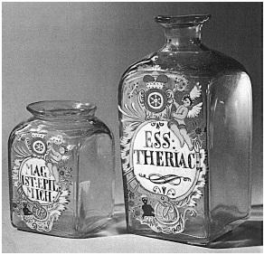

ŞEKİL 36. Mainz Mohren Eczanesi’nden mine süslemeli dörtköşe camdan eczane kapları
(1750 yılı dolayı) (Deutsches Apotheken-Museum, Heidelberg).47
Bunların dışında, eczaların saklanmasında ahşap, gümüş beyazı renkte parlak ve sağlam yapılı kalay-antimon alaşımı (İng. “pewter”, Alm. “Zinn”; “Britanya metali”) ve ayrıca gümüş kaplar da kullanılmıştır.
Kurutulmuş bağalar (kaplumbağa kabuğu) romatizmal eklem iltihaplanmalarında, enfeksiyon hastalıklarında, sarada ve kalp yetmezliğinde kullanılmıştır. Eczanelerde kap olarak kullanılan malzemeler arasında tornalanmış silindirik ahşap kaplar, hasır kutular, az sayıda olmak üzere kurşun-kalay alaşımlı ya da gümüş kaplar, cam, boynuz, kumtaşı, porselen, ayrıca fayans, çömlek, sert çömlek kaplar yer almaktaydı. Eczacı her ilaca ve hammaddeye uygun düşecek şekilde bu kapları ayrı ayrı seçerek içlerini doldururdu. Emzikli kaplar (Fra. “chevrette”) içinde şuruplar, bal ve yağlar saklanırdı. Bunların yalnızca bir tarafında sap bulunur, tek elle tutularak rahat bir şekilde kullanılır ve öteki yanda emzik şeklinde dökme ağzı yer alırdı. Albarello, karın kısmı daraltılmış yüksek boyda silindire benzer bir seramik kap olup merhem ve kıvamlı maddeler için uygundu ve ince belli orta yerinden kolayca tutulabilmekteydi. Bu kap şekli Arap tıbbına özgü olup Haçlı Seferleri kanalıyla Batı Avrupa’ya geçmiştir. Albarello, İslâm ülkelerinin eczacılık tarihi üzerine olan güçlü etkisinin bir belgesidir. Bu tarihsel ilişkiler, “albarello” nitelemesinin de Farsça kökenden türetilmiş bir terim olarak Arapça ilaç kavanozu ya da merhem kabı anlamına “al-barniya / al-barani” teriminden türetildiğini ortaya koymaktadır. Başkaca tipik ecza kapları “damıtık sular”, eliksirler ve tentürler için kullanılan dörtköşe şişeler; merhemler, afyonlu ilaçlar, şekerlemeler, balsamlar (pelesenk ağacı yağından yapılma yumuşatıcı krem) ve ağda ve macunların saklandığı boru şeklinde büyük çömleklerdir. Şeker ve şekerlemeler kökende bir şifa aracı olarak düşünüldüğünden, değer verilen tatlı yiyecekler, eczanelerin satış imtiyazında yer alıyordu. Şekerlemelerde özellikle mideyi güçlendirenler ve sindirimi düzene sokanlar ön planda bulunuyor ve kuru halde, şurup halinde ya da şekerleme haline getirilmiş zencefil çubukları halinde hazırlanıyordu.61
Drog (< Fra. “drogue”: kurutulmuş ot; müstahzar, ecza; belli bir amaçla kullanılmak üzere hazırlanmış ilaç karışımı) ve egzotik (yabancıl) ürünlere ilişkin olarak 18. yüzyılın büyük dönüşümü, Batılı güçlerin mümkün olduğu ölçüde kendi çıkarları doğrultusunda sömürmek için acele ettikleri “Yeni Dünya”dan ve kolonilerden gelen ürünlerin, çoğu zaman Akdeniz bölgesi ürünlerinin yerine geçmesine neden olmuştur. Bu değişim, 1730’lu yıllarda yaşanmıştır.59
19. yüzyıl başından itibaren bilimsel kimyanın sıçrama yapması ile birlikte doğa bilimsel araştırmaların biçimlediği bilimsel eczacılık, belirli ilaçların fizyolojik etkilerinin hangi etken maddeden kaynaklandığını belirgin bir biçimde saptayacak şekilde gelişme göstermiştir. Bu etken maddeler sürekli artan sayıda saf halleriyle yalıtılarak ele geçirilmiş ya da sentezlenerek üretilmiştir.61 Morfin saf kristal halinde 1805 yılında Alman eczacı Friedrich Wilhelm Adam Sertürner (1783-1841) tarafından afyon bitkisinden yalıtılmıştır. Sertürner bu bileşiği, uyku tanrısı Hypnos’un üç bin çocuğundan biri olan Morpheus’un adından “morphium” olarak adlandırmış ve bu ad daha sonra ünlü kimyacı Joseph-Louis Gay-Lussac’ın (1778-1850) önerisine uyularak “morphine” (morfin) biçimine dönüştürülmüştür. Sertürner, afyondan yalıttığı bu alkaloidi ilk olarak 100 mg’lık dozlar halinde kendisi ve üç arkadaşı üzerinde uygulamıştır.
“Farmakoloji” sözcüğü, Yunanca özgün anlamı “zehir bilimi” demek olup 18. yüzyılda tıptan ayrı bir meslek olarak gelişmiştir. Eczacı Rudolph Buchheim (1820-1879), ilk olarak 1847’de Estonya’nın Tartu kentindeki Dorpat Üniversitesi’nde farmakoloji enstitüsü kurmuş, böylece farmakolojinin bağımsız bir bilim dalı olmasının yolunu açmıştır. Çağdaş farmakolojinin kurucusu olarak Oswald Schmiedeberg (1838-1921) kabul edilir. Onun temel eseri Outline of Pharmacology (Eczacılık Biliminin Anahatları) (1878) adını taşır ve Schmiedeberg 1885’te hipnoz aracı olarak üretanı uygulamıştır. Farmakoloji zamanla, özellikle biyokimya ve fizyoloji gibi dallarla yakın ilişki içinde olmuştur. Schmiedeberg, öğrencileriyle birlikte farmakolojinin saygın bir konuma ulaşmasını sağlamıştır.65 Yapı-etki ilişkisi, ilaç alımı, seçimli-zehirlilik gibi temel kavramlar, İskoçya’da T. Frazer (1841-1921), İngiltere’de John Newport Langley (1852-1925) ve Almanya’da Paul Ehrlich’in (1854-1915) öncü çalışmaları ile ortaya konmuştur. İngiltere’de Alexander J. Clark (1885-1941), 1920’lerin başlarında ilaç-reseptör etkileşmelerine kimyasal kinetik biliminin “Kütle Etkisi Yasası”nı uygulayarak reseptör kuramını biçimlendirmiştir. Schmiedeberg ile iç hastalıkları hekimi Bernhard Naunyn (1839-1925), birlikte ilk farmakoloji dergisinin yayımını başlatmışlardır. Schmiedeberg’in laboratuvarında çalışan ve “Amerikan Farmakolojisinin Babası” olan John Jacob Abel (1857-1938) 1909’dan günümüze dek yayımı süren “Journal of Pharmacology and Experimental Therapeutics” adlı derginin kurucularından biri idi.
>Amerika’da ilk eczacılık okulu 1821’de Philadelphia’da açılmıştır. Georg Urdang (1882-1960) Amerikan Eczacılık Tarihi Enstitüsü’nün kurucusudur.Eczacılık alanında üstün çalışma yapanlara verilmek üzere 1952 yılından beri onun onuruna “Georg Urdang Madalyası” tesis edilmiştir.
Tıbbî olarak kullanılan ürünlerin sağlanmasını güvencelemek için tıbbî bitkiler yalnızca hasat zamanında değil, yıl boyu, bitkiyi kurutarak ya da bitkisel yağ veya alkol içinde saklayarak kullanılabilir. Bir bitkinin ya da bitkisel veya hayvansal ürünün kurutulması “drog”u verir. Günümüzde ise “drog” sözcüğü, genelde farmakoterapide kullanılan kimyasal madde anlamında kullanılmaktadır. Alkol içinde saklanan bitki kısımları “tincture” (tentür) adını alır. Bu işlemde farmakolojik açıdan etkili olan bileşenler, alkol yardımıyla bitkiden dışarı çekilir (özütlenir). Tentürler, bitkide ya da ham drogda mevcut olan maddelerin tümünü içermez; yalnızca alkolde çözünebilenleri içerir ve örneğin suda çözünüp alkolde çözünmeyenleri içermez.
Farmakolojik araştırma alanları ilaç etki mekanizmaları, ilaçların hastalık tedavisinde kullanımı ve ilaç yan etkilerini saptamayı kapsamaktadır. Eczacılık, ilaçların kaynakları, doğası, özellikleri ve hazırlanmasını kapsayacak şekilde tıp biliminin bir dalı olan “materia medica”nın bir alanıdır. Yeni ilaçların keşfinde ve tedavi edici değerdeki organik bileşiklerin sentezlenmesinde eczacılar, kimya ve tıp mesleği ile birlikte sorumluluk paylaşırlar.65
Bir bitki ya da drogdan etkin bileşenlerin yalıtılmasındaki amaçlar şunlardır:
1) Etkin bileşenlerin tanısı,
2) Her bir bileşenin biyolojik etkilerinin analizi (farmakodinamik) ve onların bedendeki akıbetlerinin analizi (farmakokinetik),
3) Kimyasal saf bileşenlerin terapötik kullanımdaki kesin ve sabit dozajının belirlenmesi,
4) Onların kimyasal sentez olanaklarının araştırılması.
Sonunda farmakolojik özellikleri en iyileştirmek üzere özgün bileşenlerin türevleri sentezlenebilir. Üretilen ürün klinik-öncesi testlerden ve klinik testlerinden geçtikten sonra, yasal üretim izinleri alınarak kullanıma sunulabilir.